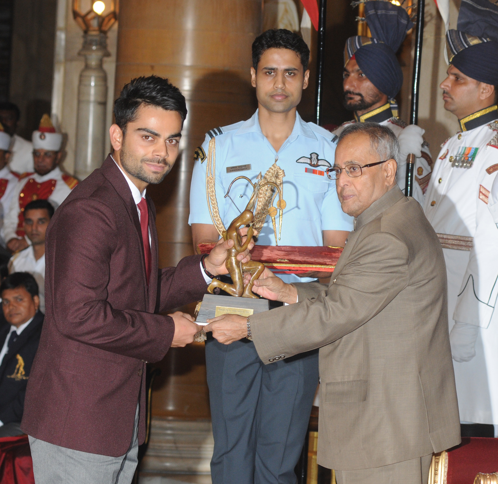
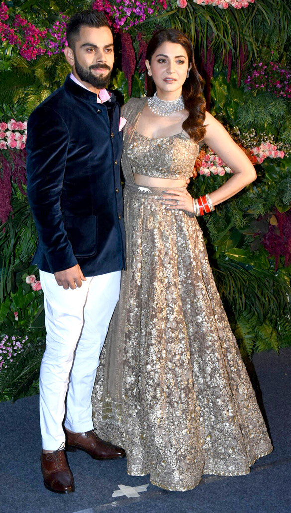
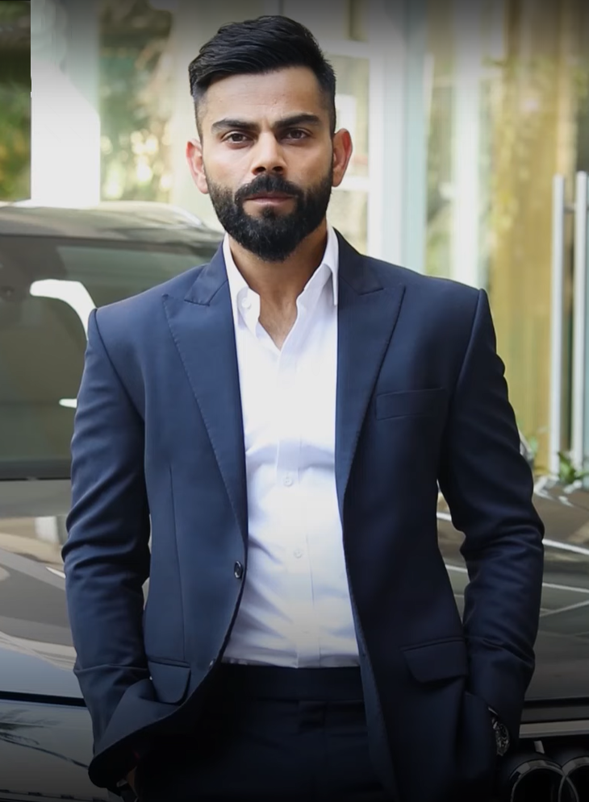

birth
Kohli was born on 5 November 1988 in New Delhi into a Punjabi Hindu family. His mother Saroj Kohli is a homemaker while his father Prem Nath Kohli worked as a criminal lawyer. He has an elder brother Vikas and an elder sister Bhawna. His formative years were spent in Uttam Nagar. His early education was at Vishal Bharti Public School.[13] As per his family, Kohli exhibited an early affinity for cricket as a 3-year-old. He would pick up a bat and request his father bowl to him.[14] In 1998, the West Delhi Cricket Academy was created. In May, his father arranged for him to meet Rajkumar Sharma.[15] Upon the suggestion of their neighbours, Kohli's father considered enrolling his son in a professional cricket academy, as they believed his ability merited more than gully cricket.[16] Kohli was unable to secure a place in the U-14 Delhi team, due to extraneous factors. His father reportedly received offers to relocate his son to influential clubs, which would ensure his selection, but he declined the proposals. Kohli eventually found his way into the U-15 team.[17] He received training at the academy and participated in matches at the Sumeet Dogra Academy located at Vasundhara Enclave.[18] To further his cricket career, he transferred to Saviour Convent School during his ninth grade.[16] On 18 December 2006, his father died due to a cerebral attack.[19] As per his mother, Kohli's demeanour shifted noticeably after his father's death. He took on cricket with newfound seriousness, prioritizing playing time and dedicating himself fully to the sport.[16] Kohli's family resided in Meera Bagh, Paschim Vihar until 2015, after which they relocated to Gurgaon.[20] Youth career
youth career
Delhi team Kohli's junior cricket career kicked off in October 2002 at the Luhnu Cricket Ground against Himachal Pradesh. His first half-century in domestic cricket happened at Feroze Shah Kotla, where he scored 70 runs against Haryana.[21] By the end of the season, he had amassed a total of 172 runs, emerging as the highest run-scorer for his team with an average of 34.40.[22] During the 2003–04 season of Polly Umrigar Trophy, Kohli was appointed the captain of the U-15 team.[22] He scored 54 runs in Delhi's victory over Himachal Pradesh. In the next fixture against Jammu and Kashmir, Kohli scored his maiden century with a score of 119. By the end of the season, he had a total of 390 runs at an average of 78, which included two centuries.[23] Towards the end of 2004, Kohli earned selection for the 2004–05 Vijay Merchant Trophy with the Delhi U-17 team.[22] In the four matches that he played, Kohli had a total of 470 runs, with his highest score being 251* runs. The team's coach, Ajit Chaudhary, lauded his performance and was particularly impressed with his temperament on the field.[24] He commenced the 2005–06 season with a score of 227 against Punjab. Following their victory over Uttar Pradesh in the quarter-finals, Delhi was scheduled to play against Baroda in the semi-finals. The team had high expectations from Kohli, who had promised his coach to finish the job. True to his word, Kohli went on to score 228 runs, leading Delhi to victory. The team later secured the tournament with a five-wicket win over Mumbai, where he contributed with a half-century in the first innings.[25] He ended as the highest run-scorer with a total of 757 runs from 7 matches, averaging 84.11.[26] On 18 February 2006, Kohli made his debut in List A cricket, playing against Services in the Ranji One-Day Trophy, but he did not get the opportunity to bat during the match.[26] In 2006, Kohli got a spot in the state senior team. Subsequently, he made his first-class debut on 23 November 2006, during the opening match of the Ranji Trophy season against Tamil Nadu. However, his debut innings was a brief one, as he was dismissed after scoring ten runs.[27] In the subsequent match against former champions, Karnataka, Delhi found themselves trailing with a score of 130/5, with Kohli remaining unbeaten on 40 at the end of the day's play. That night, Kohli's father died. Despite the heart-wrenching news, Kohli returned to the match and continued to bat and scored 90 runs before he was dismissed.[28] Chetan Chauhan, the coach, was impressed by his determination and unwavering attitude in the face of adversity. Venkatesh Prasad lauded his crucial knock, which was executed in the midst of an emotional upheaval. After his dismissal, Kohli attended his father's funeral. His innings proved to be crucial for Delhi as they were able to avoid the follow-on. The team's captain, Mithun Manhas, praised Kohli for his performance, acknowledging its pivotal role in the team's success.[29] Kohli's foray into T20 cricket first happened in April 2007, during the Inter-State T20 Championship.


playing style
Personal life Kohli with wife Anushka Sharma in their Mumbai reception Kohli's romantic association with Bollywood actress Anushka Sharma, which commenced in 2013, earned the duo the moniker of "Virushka".[231] During an interview with Graham Bensinger, Kohli divulged that he had encountered Sharma for the first time, when they were both were engaged in a promotional shoot for Clear shampoo.[232] Their union since then has attracted significant media interest, with persistent rumours and speculations swirling around in the press, as both parties remained reticent about publicly discussing the relationship.[233] On 11 December 2017, the couple exchanged nuptials in an intimate ceremony held in Florence, Italy, becoming one of the most talked-about celebrity couples in the country.[234] On 11 January 2021, the couple had their first child, a daughter, who was named Vamika.[235] On 15 February 2024, the couple welcomed their second child, a son named Akaay.[236] In 2018, Kohli disclosed that he had made the decision to adopt a vegetarian diet in an effort to alleviate the symptoms of a cervical spine issue caused by elevated levels of uric acid. This condition was impacting his finger movements, and thus, affecting his performance as a batsman. He made a conscious effort to abstain from consuming meat, as part of his regimen for maintaining optimal health.[237] He has since clarified that his dietary choices do not align with a vegan lifestyle and he continues to consume dairy products.[238] Kohli is widely recognized for his physical fitness and intense training regimen.[239] He has been an advocate of leading a healthy lifestyle, which involves regular exercise and a nutritious diet. His hard work and discipline in this area have earned him the reputation of being one of the fittest cricketers in the world.[240] Kohli has acknowledged a belief in superstitions, and owns various lucky charms and rituals that he feels bring him good fortune on the cricket field. This includes wearing of black wristband and a single pair of gloves.[241] Furthermore, Kohli has been observed sporting a kara, a traditional bangle often worn for religious or spiritual purposes, on his right arm since 2012.[242] In addition to the previously mentioned superstitions, Kohli has also established the ritual of consistently donning white shoes on the cricket field.[243] He has a number of tattoos, including of the Hindu deity Shiva, the names of his parents, and his ODI and Test match cap numbers.[244]
personal life
Personal life Kohli with wife Anushka Sharma in their Mumbai reception Kohli's romantic association with Bollywood actress Anushka Sharma, which commenced in 2013, earned the duo the moniker of "Virushka".[231] During an interview with Graham Bensinger, Kohli divulged that he had encountered Sharma for the first time, when they were both were engaged in a promotional shoot for Clear shampoo.[232] Their union since then has attracted significant media interest, with persistent rumours and speculations swirling around in the press, as both parties remained reticent about publicly discussing the relationship.[233] On 11 December 2017, the couple exchanged nuptials in an intimate ceremony held in Florence, Italy, becoming one of the most talked-about celebrity couples in the country.[234] On 11 January 2021, the couple had their first child, a daughter, who was named Vamika.[235] On 15 February 2024, the couple welcomed their second child, a son named Akaay.[236] In 2018, Kohli disclosed that he had made the decision to adopt a vegetarian diet in an effort to alleviate the symptoms of a cervical spine issue caused by elevated levels of uric acid. This condition was impacting his finger movements, and thus, affecting his performance as a batsman. He made a conscious effort to abstain from consuming meat, as part of his regimen for maintaining optimal health.[237] He has since clarified that his dietary choices do not align with a vegan lifestyle and he continues to consume dairy products.[238] Kohli is widely recognized for his physical fitness and intense training regimen.[239] He has been an advocate of leading a healthy lifestyle, which involves regular exercise and a nutritious diet. His hard work and discipline in this area have earned him the reputation of being one of the fittest cricketers in the world.[240]


public image and media
Public image and in media Virat Kohli with AudiQ7 In 2008, Kohli was approached by sports agent Bunty Sajdeh of Cornerstone Sport and Entertainment after his notable performance in the ICC Under-19 World Cup. Sajdeh was impressed with Kohli's leadership skills and attitude and saw great potential in the young cricketer. After being recommended by Yuvraj Singh, Kohli was signed to Cornerstone Sport and Entertainment.[210] Over the years, Kohli's brand endorsement portfolio has experienced significant growth. In 2013, it was reported that his endorsements were valued at over ₹100 crore (US$12 million).[211] Now in 2023, his brand value has reached ₹1,000 crore (US$120 million).[212] His bat deal with MRF is regarded as one of the most financially rewarding deals in cricket history.[213] In 2017, Kohli entered into a notable endorsement agreement with Puma that spanned over eight years and was estimated to be worth around ₹1.1 billion (US$13 million). This deal made Kohli the first Indian athlete to sign a brand endorsement contract valued at ₹100 crore (US$12 million) deal with a brand.[214] As of January 2023, Kohli is widely regarded as the most marketable cricketer, with annual earnings estimated at ₹165 crore (US$20 million).[215] Kohli is currently recognized as the most followed Asian individual on the social media platform Instagram, boasting over 274 million followers on the platform. Reports indicate that he is able to command a fee of ₹8.9 crore (equivalent to ₹9.4 crore or US$1.1 million in 2023) for each sponsored post on the platform